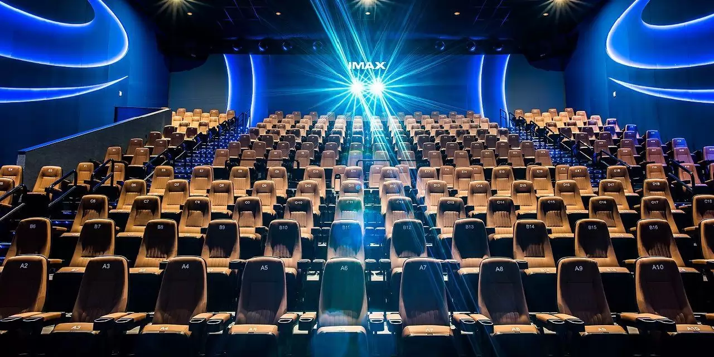

Cinépolis es una empresa mexicana dedicada a la exhibición de películas fundada en 1971 en Morelia, Michoacán, bajo el nombre de Organización Ramírez. Hasta el 31 de diciembre de 2023, operaban 891 conjuntos cinematográficos con 6,836 salas 100% digitales; 499 se ubican en México y 6337 en 17 países